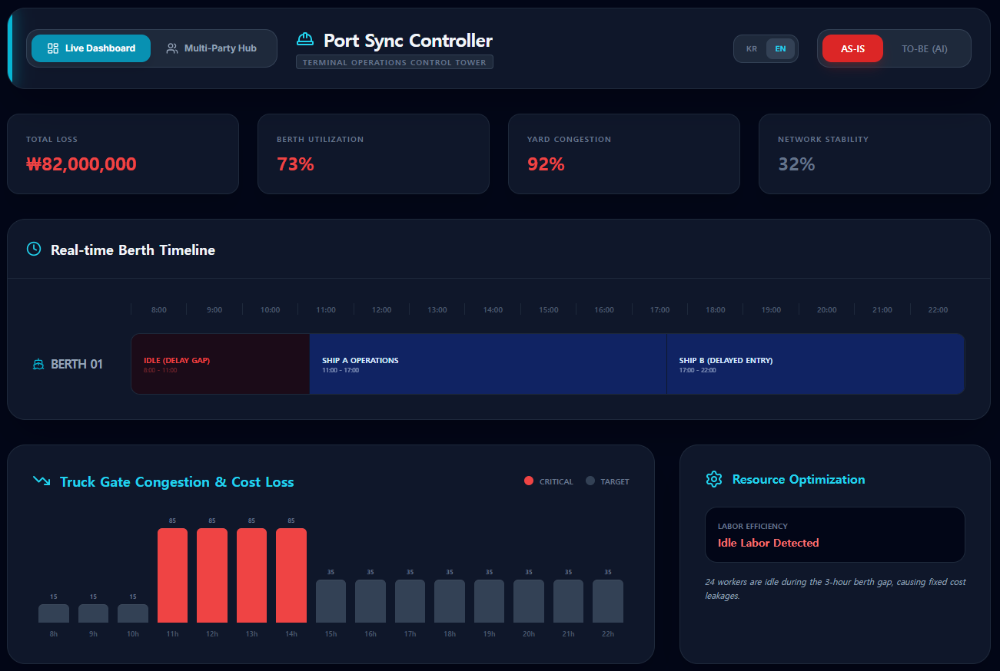

MaeBara One: The Autonomous Maritime Platform
24/7, 365 days — without human intervention, an autonomous AI platform that optimizes port operations.


Automated
AI judges and executes on its own — a truly autonomous operations platform
32.4%
Container rehandling reduction — immediate OPEX savings realized
55.1B KRW
Annual savings potential at Busan Port — Rev-Share revenue model